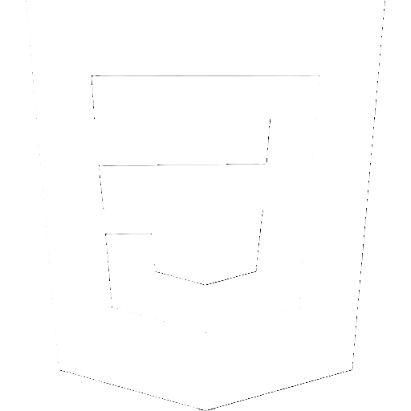

關於我
尋找生活的美好，用好奇心探索世界

老魚oldfish
「做自己喜歡的事，不一定專業，但一定用心。」
我在做什麼
白天專注於做好一個學生，放學後則開始發掘屬於自己的資訊科技小宇宙。
- - 學習電腦與作業系統的奧秘
- - 把自己的發想實作
旅程筆記
2025
打上人生第一行代碼，開啟寫程式的冒險。
2021
擁有了第一台屬於自己的電腦，開始亂玩與拆解。
2019
第一次接觸電腦，感到濃厚興趣。正式開始探索科技領域。
(不專業)技能
還在摸索，但已經愛上：




「老魚」這個暱稱的由來
因為我姓余，所以被同學叫「老余」。後來經過修改就叫做「老魚」了~